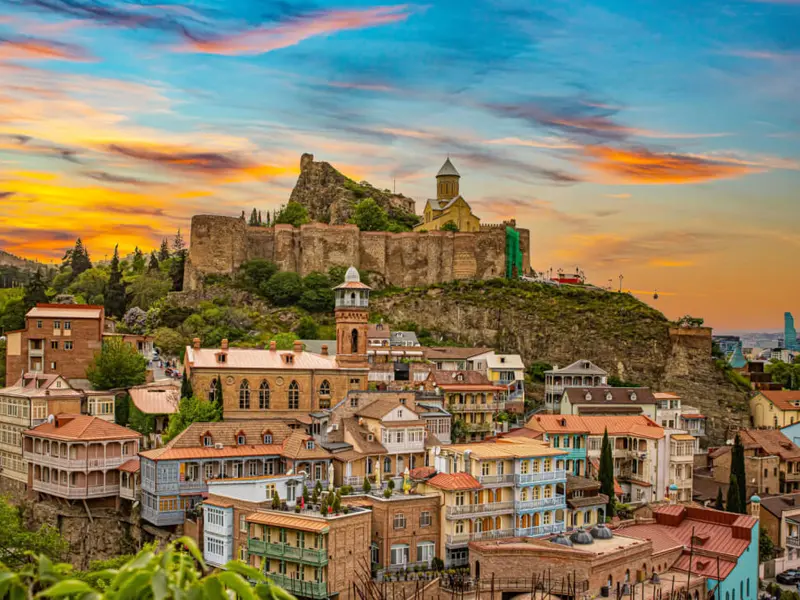
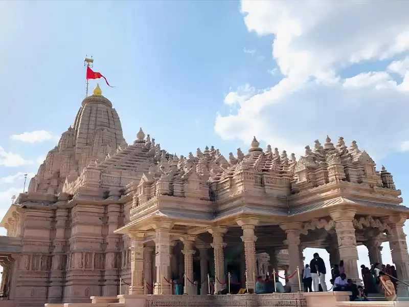
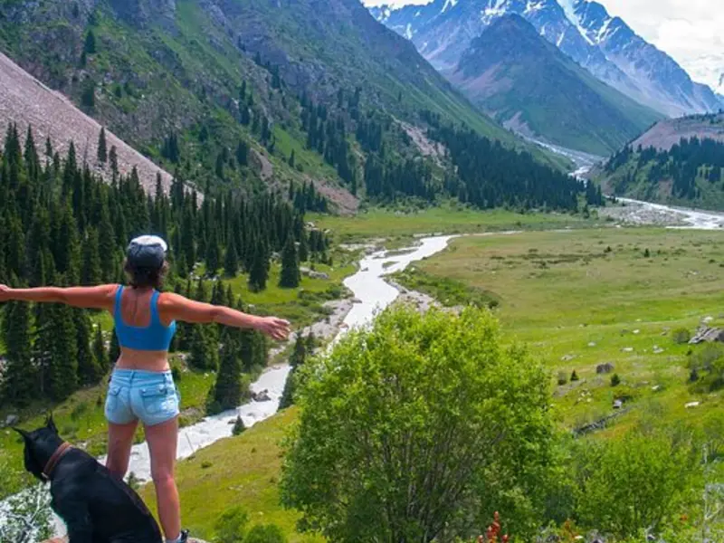
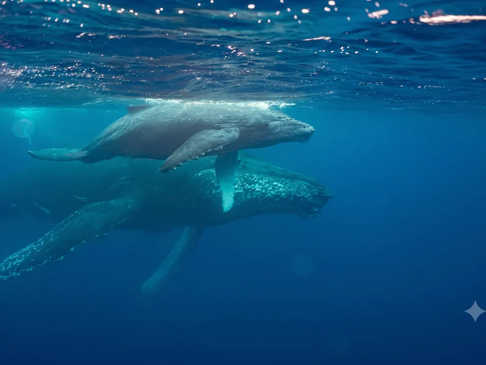

Less ticking off places. More experiences you’ll remember.
Trips planned around who’s going and what they want — not a fixed package.

What’s on your mind?
Tell us in a line. A person reads every one of these — no chatbot, no auto-reply.
Why Zubilant

Who’s travelling?
Pick how you want to search — by who’s going, by interest, or by month. We’ll show you trips that match.

Family travel
Paced for grandparents and eight-year-olds in the same group. Kashmir to Kerala to Singapore.

Friends travel
Long road days and high passes: Spiti, Tawang, the Caucasus, Almaty, Poon Hill.

Spiritual journeys
Darshan slots arranged, queues managed: Varanasi, Ayodhya, Char Dham, Rameswaram.

Senior Travel Saathi
For the adult child booking for a parent. Lifts, drive caps, hospitals named.

Couples & honeymoons
Lakshadweep lagoons, Bali beyond the villa, Mauritius, the Thar under canvas.

First trip abroad
Singapore, Dubai, Vietnam, Sri Lanka: easy visas, easy food, escorted throughout.
Visa-free escapes
Maldives, Thailand, Bhutan, Nepal, Sri Lanka, Mauritius, Kazakhstan: no embassy queue.

Corporate & institutions
Headcount, days, and a record of what did not go wrong.

Culture & heritage
Rajasthan, Hampi, Khajuraho, Chettinad, Kyoto, the Caucasus.

Mountains & high roads
Ladakh, Spiti, Tawang, the Annapurna foothills, the Jungfrau.

Wildlife & nature
Ranthambore, Bandhavgarh, Kaziranga, and the Masai Mara migration.

Spiritual & pilgrimage
Varanasi, Ayodhya, Char Dham, Rameswaram, Dwarka.
Beaches & islands
The Andamans, Lakshadweep, Bali, Mauritius, Sri Lanka.

Slow travel & wellness
Rishikesh, the backwaters, Coorg, the Malabar coast.

Food & markets
Amritsar, Kozhikode, Chettinad, Hanoi, Tbilisi.

Adventure
Gulmarg ski school, Valley of Flowers, Poon Hill, Iceland.

March & April
Kashmir tulips · Sikkim in bloom · Japan sakura · Bhutan spring.

June to September
Ladakh · Spiti · Valley of Flowers · the Masai Mara migration · the Alps.

October to February
Rajasthan · Kerala · Rann Utsav · Vietnam · Dubai · the temple south.

December to March
Andaman · Lakshadweep · Sri Lanka · Thailand · Gulmarg in snow.

Vietnam North to South
The fastest-rising destination for Indian travellers: easy e-visa, Ha Long nights, lantern-lit Hoi An.

Japan in Cherry Blossom Season
Japan tops the 2026 wishlists. Timed for the real bloom window, by rail.

Georgia & Azerbaijan: The Caucasus Road
The Caucasus road is filling with Indian travellers before the big operators notice.

Ayodhya, Prayagraj & Chitrakoot: The Ram Path
India’s most-visited new pilgrimage, paced for elders with managed darshan.

Almaty & the Kazakh Mountains
Visa-free, four hours from Delhi, mountains from the last street. Go before the crowds.

Iceland: Ring of Fire & Ice (with the Diamond Circle)
The one big Arctic trip: fire, ice and the Diamond Circle most tours never reach.
Kashmir in Tulip Season
Trending ranking needs three months of enquiry data.
Kerala Backwaters, Slowly
Trending ranking needs three months of enquiry data.
Trending Trips ⚡
What other travellers are booking right now.
Rajasthan for First-TimersFrom ₹40,000
 The Golden Triangle: Delhi, Agra & JaipurFrom ₹55,000
Vietnam North to SouthFrom ₹1,10,000
Ladakh by RoadFrom ₹70,000
Ayodhya, Prayagraj & Chitrakoot: The Ram PathFrom ₹48,000
Kerala Backwaters, SlowlyFrom ₹58,000
The Golden Triangle: Delhi, Agra & JaipurFrom ₹55,000
Vietnam North to SouthFrom ₹1,10,000
Ladakh by RoadFrom ₹70,000
Ayodhya, Prayagraj & Chitrakoot: The Ram PathFrom ₹48,000
Kerala Backwaters, SlowlyFrom ₹58,000
 Dubai & Abu Dhabi Done ProperlyFrom ₹85,000
Dubai & Abu Dhabi Done ProperlyFrom ₹85,000
Stories from the road.
4.9 stars on Google. Quoted verbatim, nothing paraphrased.
Sachin from Zubilant did an excellent job organizing a tour of the Badami and Hampi area for us. From a comfortable car and driver to hotels, sites and guide. We had a wonderful experience on our first trip to India.
Where will you go?
Every marker on the map is a real trip we’ve planned before.

You can trust me.
Sachin Mehta started Zubilant in 2009. He also represents India at UN/CEFACT, the United Nations body that sets global standards for travel.
Special Contribution in Travel & Tourism Industry
Best Customised Tour Organisers in Maharashtra
Best Entrepreneur Award
Rashtriya Udyog Ratna